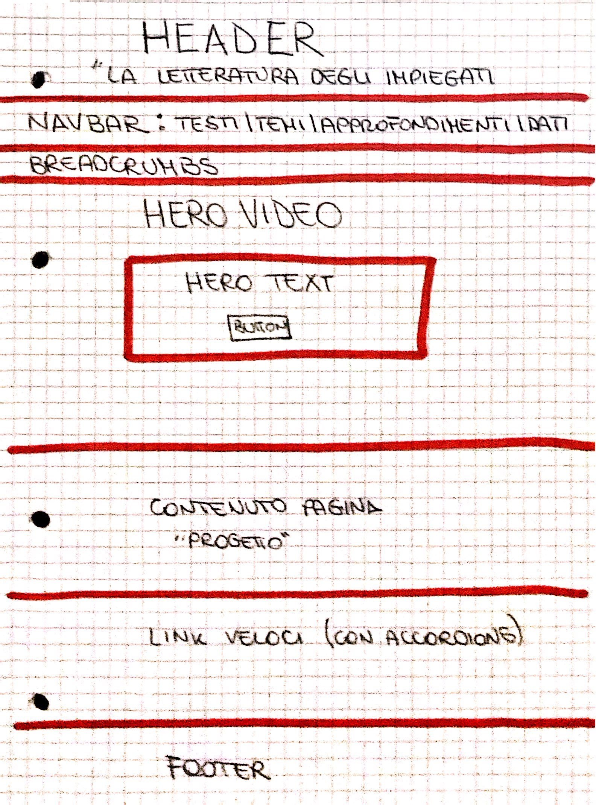
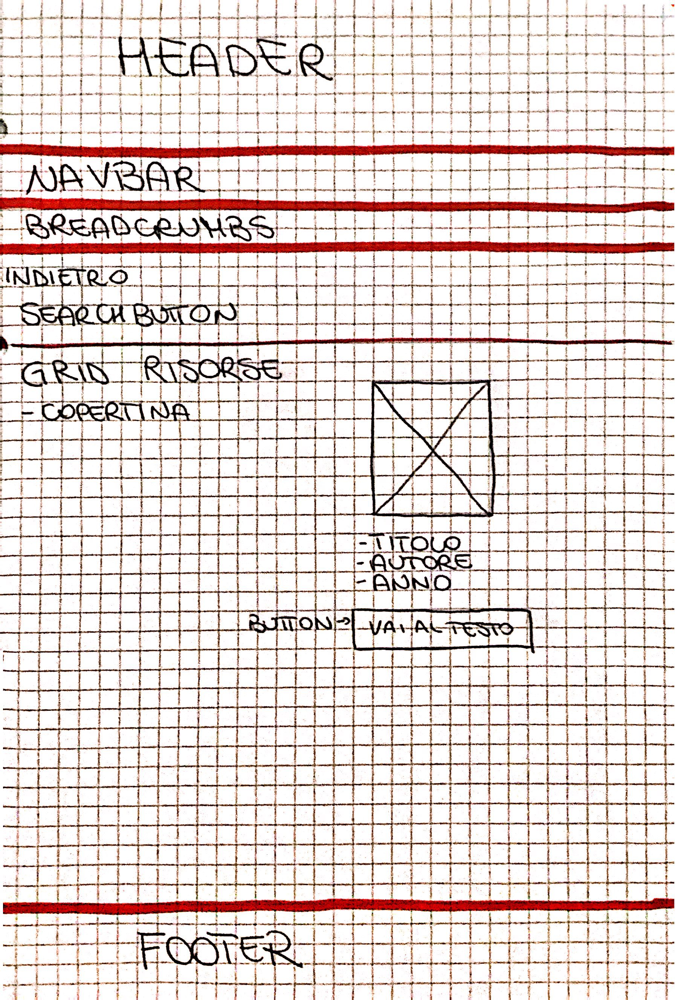
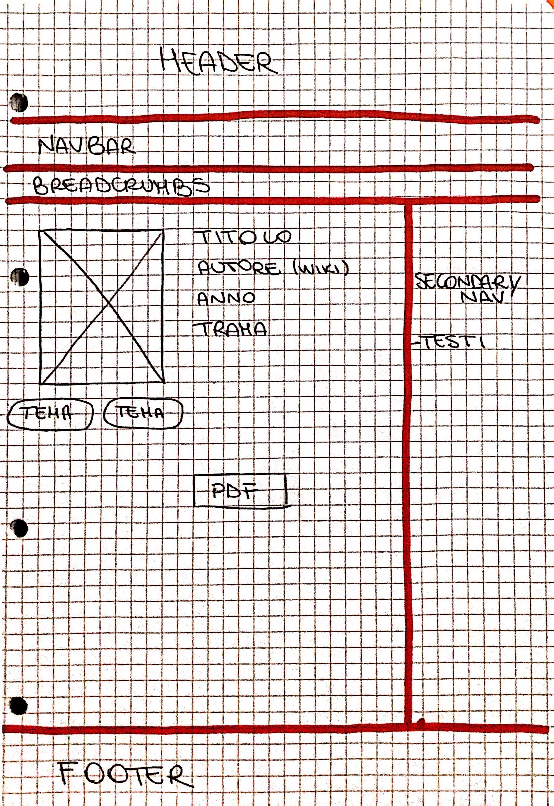
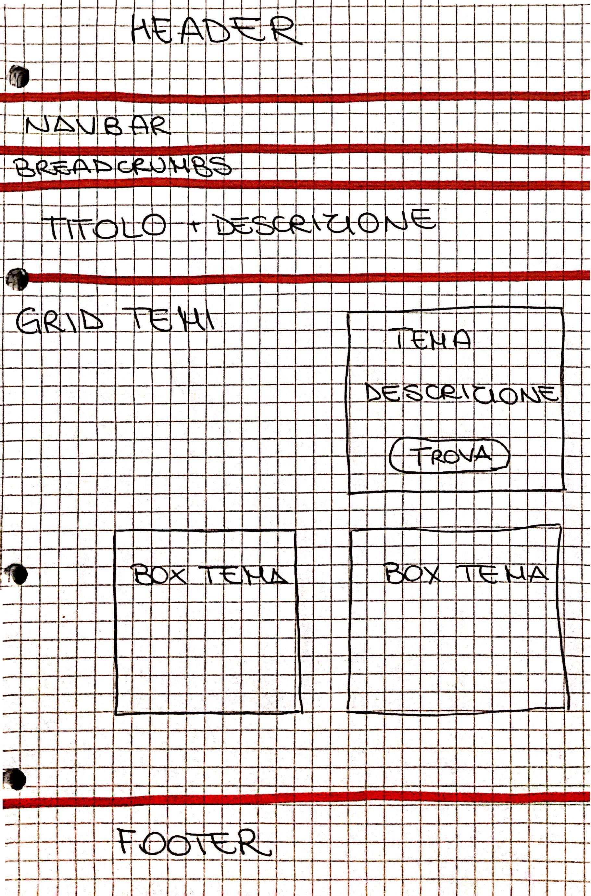
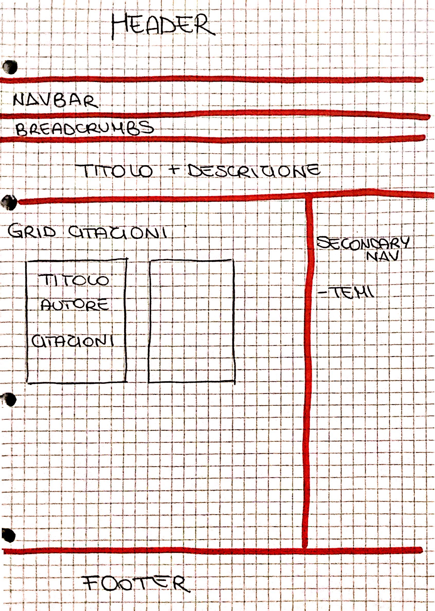
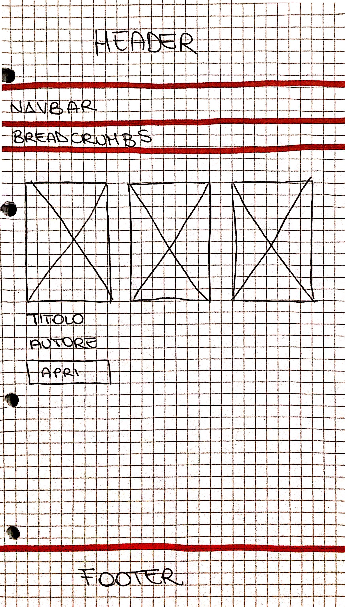
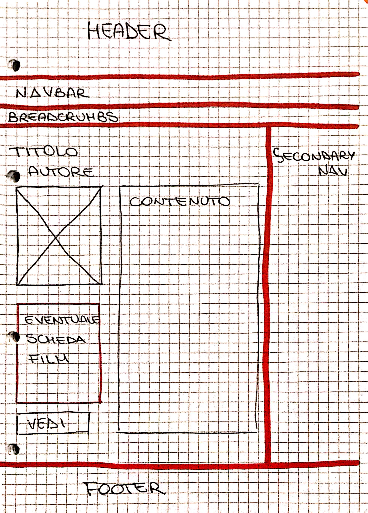

Abstract
Il progetto La letteratura degli impiegati è un sito web dedicato all'analisi di una serie di opere letterarie che hanno come figura principale quella dell'impiegato inserito nei meccanismi burocratici ed amministrativi della società. Il sito propone, attraverso uno sguardo tematico, una lettura trasversale dei testi. Ogni pagina è organizzata per facilitare una navigazione reticolare tra testi, temi e approfondimenti, con strumenti interattivi come searchbar, breadcrumbs e modali.
Brief
- Finalità: Creare un sito che esplori la letteratura degli impiegati come un fenomeno culturale e sociale, attraversando temi e contesti. Può essere utile come base di studio per un esame di Sociologia della Letteratura. Lo scopo è didattico e culturale.
- Pubblico: Studenti di discipline umanistiche, lettori non specialisti, docenti e ricercatori interessati alla letteratura moderna
- Accesso: Tutti i contenuti sono accessibili via web. Contenuti testuali, immagini di copertina, video e PDF esterni. Design responsive, compatibile con diversi dispositivi.
- Contenuti e dati:
Contenuti creati: pagine HTML dei testi, citazioni, temi, approfondimenti, Web Project Plan.
Contenuti presi da fonti esterne: PDF, trailer, video album, copertine di pubblico dominio. Trailer e video album da Youtube.
Benchmark
Analisi di mercato e concorrenti
- Biblioteca Italiana: raccolta di testi, ricerca avanzata. Assenza di collegamento tra testi e temi.
- Progetto Gutenberg: testi gratuiti, navigazione alfabetica. Manca navigazione tematica interattiva.
Struttura
Mappa concettuale. 
Schema: Home → Testi → Item/ Temi → Item / Approfondimenti → Item / Dati.
Categorie: Titolo, Autore, Anno, Tipo di risorsa, URL.
Layout
Wireframes
- Index 
- Pagina Testi 
- Pagina Item-Testo 
- Pagina Temi 
- Pagina Item-Temi 
- Pagina Approfondimenti 
- Pagina Item-Approfondimenti 
Elementi della pagina
- Header: titolo
- Navbar principale: Testi, Temi e approfondimenti con dropdown; Dati.
- Breadcrumbs: mostra percorso, link alle pagine e button per tornare alla Home
- Secondary navigation: menù verticale per navigazione secondaria nelle pagine Item
- Main: contenuto della pagina (testi, citazioni, immagini)
- Footer: credits, Web Project Plan
Strumenti di navigazione usati
- Dropdown menù
- Breadcrumbs
- Secondary navigation
- Modali
Usabilità
- Architettura: Layout con header, navbar, breadcrumbs, contenuto centrale, footer.
- Aspetto e tipografia: L'aspetto grafico è pulito, con stile moderno e dinamico, orientato alla chiarezza dei contenuti; la tipografia privileggia la leggibilità con chiara gerarchia tra titoli, sottotitoli e paragrafi. Il tono è formale ma accessibile. Le componenti di interfaccia hanno uno stile uniforme. il feedback visivo all'utente è garantito con stati hover/active e messaggi di errore chiari durante le interazioni.
- Colori, icone, font: la palette di colori è sui toni del rosso e i colori sono scelti per garantire un adeguato contrasto tra testo e sfondo. Le icone sono semplici, provenienti dalla libreria di FontAwesome 4. Il font è sans-serif per garantire una lettura fluida.
Servizi
- Navbar con dropdown come strumento di navigazione principale
- Navigazione secondaria per scorrere tra i testi e le citazioni una volta aperta una pagina item
- Breadcrumbs per indicare all'utente la posizione all'interno del sito e tornare alle pagine precedenti.
- Accordion per mostrare o nascondere porzioni di testo
- Modali per visualizzazione dei temi senza uscire dalla pagina corrente
- Top button sopra al footer per tornare rapidamente all'inizio della pagina
- Sorting button che permette di ordinare le card dei testi in base a titolo, autore o anno con possibilità di ripristinare l'ordine iniziale
- Strumenti integrativi: Collegamenti a Youtube, PDF, e pagina Wikipedia autori
Bibliografia
Testi:
- Honoré de Balzac, Gli impiegati (1844);
- Herman Melville, Bartelby lo scrivano (1853);
- Anton Čechov, La morte dell’impiegato (1883), in Racconti;
- Emilio De Marchi, Regi impiegati (1892) in Il punto esclamativo e altri incubi ortografici;
- James Joyce, Rivalsa in Gente di Dublino (1914);
- Piero Jahier, Resultanze in merito alla vita e al carattere di Gino Bianchi (1915);
- Franz Kafka, Il castello (1926),
- Siegfried Kracauer, Gli impiegati (1930);
- Italo Calvino, “L’antilingua” (1965), in Una pietra sopra. Discorsi di letteratura e società;
- Franz Kafka, Il processo (1925);
- George Orwell, 1984 (1948).
Film e musica:
- Living (2022), diretto da Oliver Hermanus (remake della pellicola di Akira Kurosawa del 1952);
- Fantozzi (1975);
- album musicale di Fabrizio De André, Storia di un impiegato (1973).